25/11. Spec 2026-11-24-besta-refeita-design.md §5 (3)–(4) e §6 ("clara / garras pontilhadas"). Cada candidata está desenhada sobre a arena de verdade (capturada no jogo sem ela) no tamanho do jogo, na posição em que o motor a põe.
25/11, aplicada a B (ele: "pode aplicar a B e instalar tudo"). As 32 folhas da Besta foram geradas de novo com o osso e o vermelho mais escuros. As medidas por quadro (o core, o corpo, a caixa que fere) continuam idênticas: o gerador agora mede o quadro original e só pinta a folha. Abaixo, ela no jogo com a B.
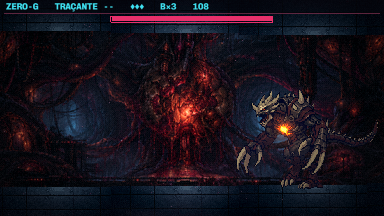
O jogo desenha a Besta a 0,70 pelo vizinho mais próximo (o modo pixel art), que descarta linhas e colunas inteiras do quadro. Na Besta velha isso deixava as garras pontilhadas. Comparei com a alternativa da spec: pré-reduzir as folhas pela média da área, cortando o alfa em 50 % e prendendo cada pixel à paleta do próprio quadro.
Resultado: com a E-7-1 as garras seguram a linha nos dois jeitos. O desenho limpo tem garras largas, com 4–6 px de traço no quadro, e nada pontilha. A pré-redução (à direita) só alisa um pouco os degraus. Minha recomendação é não mudar nada aqui: pré-reduzir obrigaria a refazer a tabela por quadro e todo o motor numa grade de 180 px, para um ganho que mal se vê.
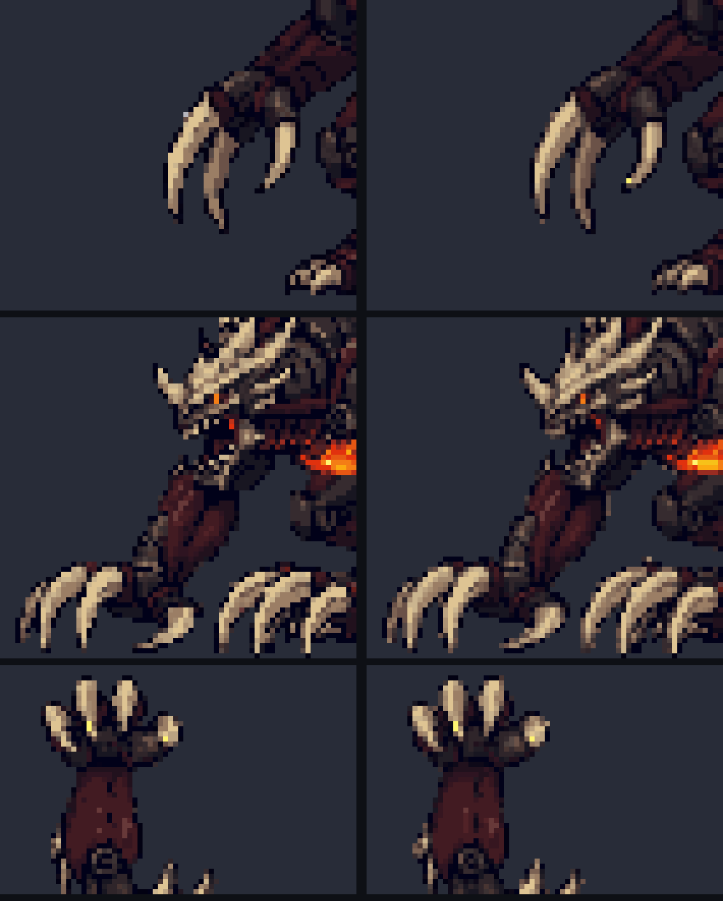
À esquerda, como o jogo desenha hoje (vizinho mais próximo). À direita, pré-reduzida. Ampliado 6×: as garras da frente de lado, de quatro e pendurada.
A spec pedia um mapa de cor só, aplicado a todos os clipes: osso e vermelho mais escuros, acesos só o core, a lava e a boca (a regra do dark sci-fi: luz só onde há energia). A E-7-1 já nasceu grafite, então a dúvida é se o osso bege (garras, espinhos, crânio) ainda está claro demais.
Cada faixa abaixo mostra, da esquerda para a direita: A como o jogo desenha · A pré-reduzida · B · B pré-reduzida · C · C pré-reduzida. Tudo ampliado 3×.
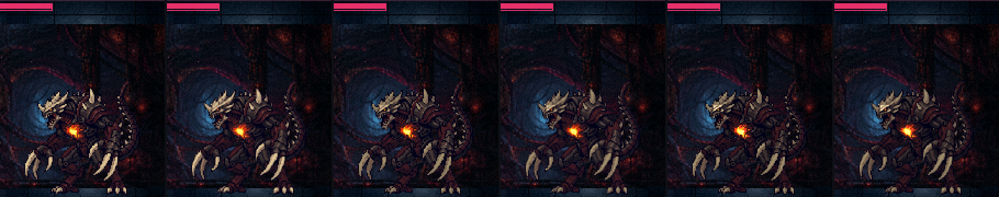
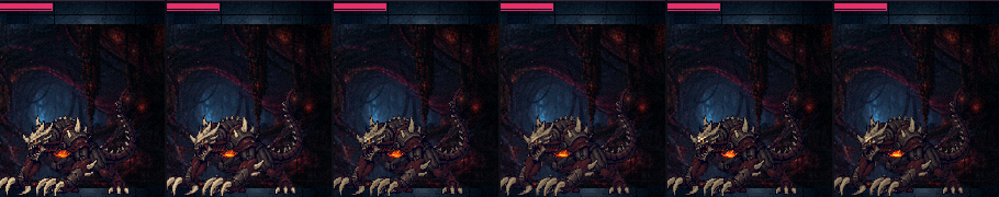
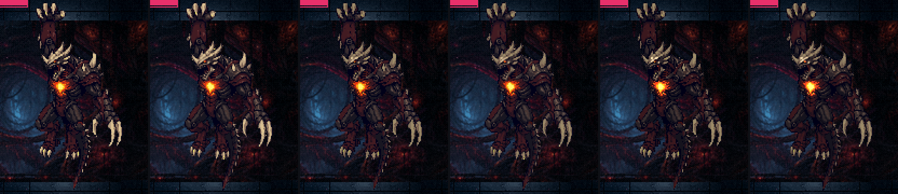
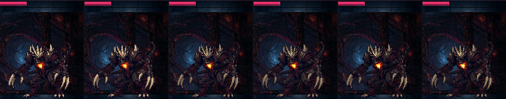
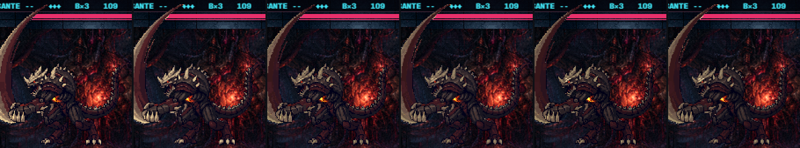
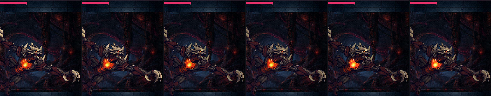
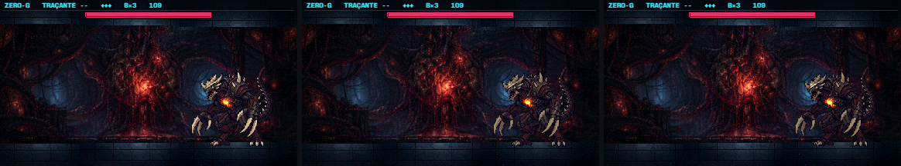
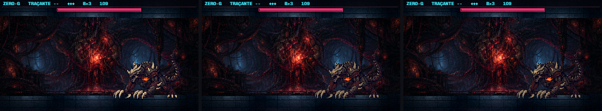
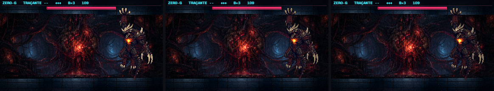
| Opções | A minha recomendação | |
|---|---|---|
| 1. As garras | Manter a redução de hoje, ou pré-reduzir as folhas. | Manter. Nada pontilha, e pré-reduzir muda o motor inteiro por quase nada. |
| 2. A cor | A, B ou C. | B. O osso deixa de competir com o core, e a silhueta continua lendo contra o vórtice azul. Na C o grafite mais escuro some no fundo escuro da arena, e no breu ela já é só silhueta. |
Aplicar é uma linha: COR = 'B' no topo de scripts/_f4/besta_folhas.py, e gerar de novo. As folhas e a tabela saem recoloridas, todas no mesmo mapa. Com COR = 'A', a saída é idêntica à de hoje (conferido no md5). O comparador é o scripts/_f4/besta_recolor.py, e o fundo vem de scripts/_f4/_besta-fundo.mjs.